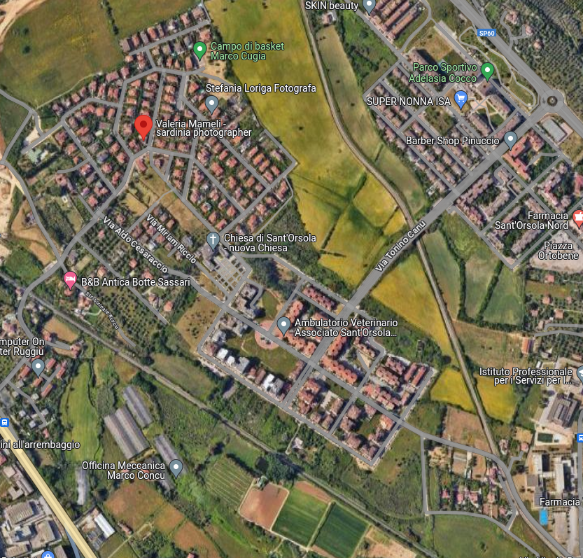

Sant'Orsola
Quartiere residenziale situato nella periferia nord di Sassari, Sant'Orsola si divide in due zone principali: Sant'Orsola Nord e Sant'Orsola Sud. Caratterizzato da edifici moderni e ampi spazi verdi, offre servizi come scuole, parchi e centri commerciali. È apprezzato per la tranquillità e la qualità della vita che offre ai suoi residenti.
Punti di Ritrovo
- Piazza Mario Scassellati: Frequentata da giovani e famiglie.
- Piazza Ortobene: Un importante punto di incontro.
- Piazza "Cesaraccio": Area ben servita e molto viva.
- Piazza Francesco Bande: Riconosciuta come un luogo di aggregazione.
Tipologia di Abitazione
- Case Popolari: 20%
- Palazzi: 40%
- Ville Private: 50%
- Quartiere Residenziale: Sì
- Quartiere Dormitorio: Sì
Attività per il Tempo Libero
Organizzate
- Atletica Sassari A.S.D.: Tel: 328 274 5709, Email: atleticasassariasd@gmail.com
- S. Orsola Team Basket: Referente: Mavi, Tel: 340 938 1254
Non Organizzate
Parco “1 per 10”, Parco sportivo “Adelasia Cocco”, Campo da basket “Marco Cugia”.
Servizi al Cittadino
- Farmacia S. Orsola Nord: Via Ortobene, 10, Tel: 079 676 6415
- Farmacia S. Orsola: Via Benvenuto Lobina, 10, Tel: 079 412 5122
- Medico di Base Dott. Falchi Caterina: Via F.lli Atzeni 2, Tel: 380 594 9658
- Ambulatorio Vet Ruiu-Dessi: Via Eufemia Sechi, 35, Tel: 079 259 4068
Reti Urbane e Trasporti
- Linea 719: Da Via Padre Zirano.
- Fermate di autobus: Via Cesaraccio, Via Ortobene.
- Linea OT: Include fermate in Sant'Orsola, garantendo collegamenti con Via Tavolara e zone residenziali vicine come Li Punti. Corse in grassetto segnano il passaggio attraverso Sant'Orsola per un servizio più mirato durante l'orario scolastico.
- Corse Scolastiche: Linee scolastiche 4 e 5 passano per Sant'Orsola, collegandola con vari istituti, facilitando così l'accesso agli studenti nelle giornate scolastiche.
Scuole nel Quartiere
- Scuola Primaria “Via Castellaccio”: Tel: 079 284 5490, Email: ssic83800b@istruzione.it
- Scuola Primaria “Via Gennargentu”: Tel: 079 284 5240, Email: ssic83800b@istruzione.it
- Scuola Infanzia “Sant'Orsola”: Tel: 079 397622, Email: ssic83800b@istruzione.it